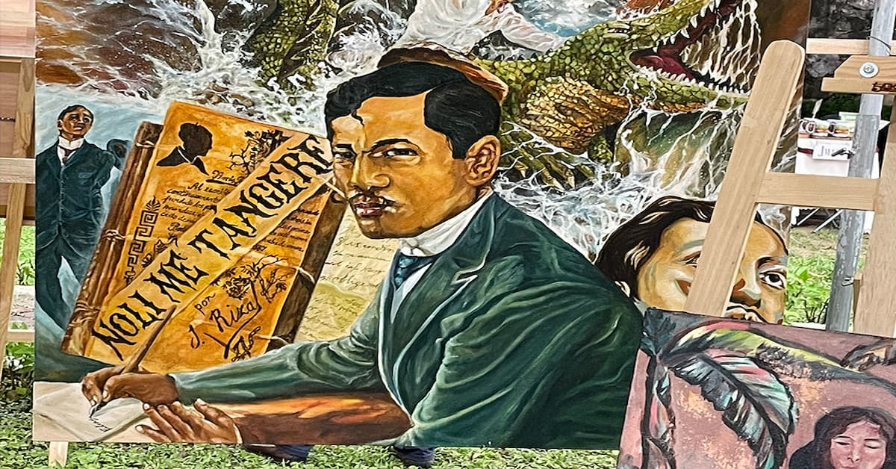

Arts & Culture
In the sun-drenched hills of Rizal, art is not merely a collection of objects confined within walls—it is the very pulse of the province, a living, breathing legacy that flows from the mountain peaks to the shores of Laguna de Bay. As the recognized 'Art Capital of the Philippines,' Rizal stands as a grand open-air gallery where the whispers of prehistoric ancestors are etched into 5,000-year-old volcanic stone and the bold strokes of National Artists define the modern Filipino identity. To walk through the streets of Angono or the white-washed villas of Antipolo is to witness a profound dialogue between the past and the present, where ancestral homes serve as shrines to genius and contemporary sanctuaries offer a Mediterranean-inspired escape for the weary soul.